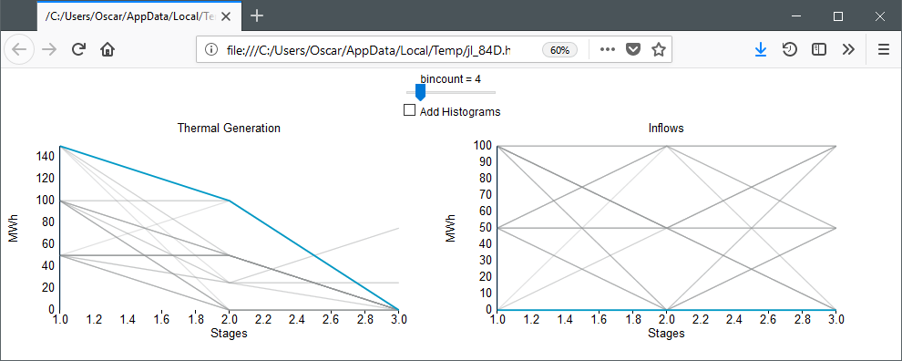
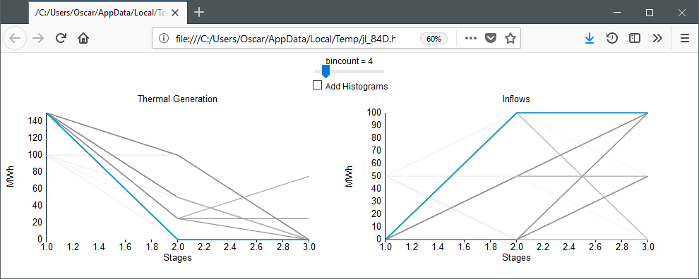
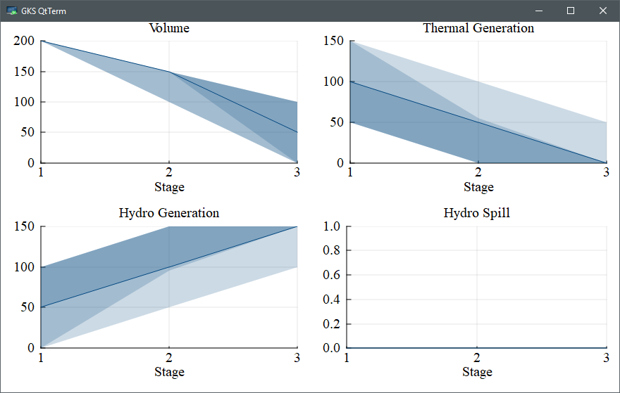
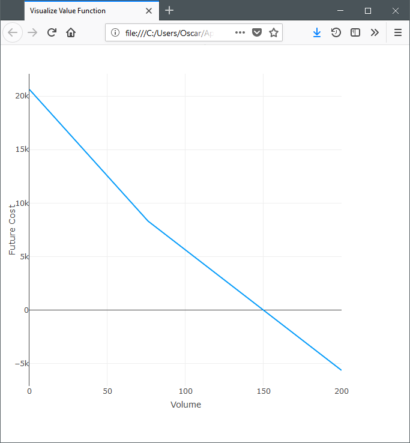

Tutorial Seven: plotting
In our previous tutorial, we have formulated, solved, and simulated a multistage stochastic optimization problem. However, we haven't really investigated what the solution looks like. Luckily, SDDP.jl includes a number of plotting tools to help us do that. In this tutorial, we explain the tools and make some pretty pictures.
First, recall from Tutorial Six: cut selection that our model is:
m = SDDPModel(
sense = :Min,
stages = 3,
solver = ClpSolver(),
objective_bound = 0.0,
markov_transition = Array{Float64, 2}[
[ 1.0 ]',
[ 0.75 0.25 ],
[ 0.75 0.25 ; 0.25 0.75 ]
],
risk_measure = EAVaR(lambda=0.5, beta=0.1),
cut_oracle = LevelOneCutOracle()
) do sp, t, i
@state(sp, 0 <= outgoing_volume <= 200, incoming_volume == 200)
@variables(sp, begin
thermal_generation >= 0
hydro_generation >= 0
hydro_spill >= 0
end)
@rhsnoise(sp, inflow = [0.0, 50.0, 100.0],
outgoing_volume - (incoming_volume - hydro_generation - hydro_spill) == inflow
)
@constraints(sp, begin
thermal_generation + hydro_generation == 150
end)
fuel_cost = [50.0, 100.0, 150.0]
@stageobjective(sp, mupliplier = [1.2, 1.0, 0.8],
mupliplier * fuel_cost[t] * thermal_generation
)
if i == 1 # wet climate state
setnoiseprobability!(sp, [1/6, 1/3, 0.5])
else # dry climate state
setnoiseprobability!(sp, [0.5, 1/3, 1/6])
end
endWe're going to solve this for 20 iterations and then simulate 100 Monte Carlo realizations of the solution.
status = solve(m, iteration_limit = 20)
simulation_result = simulate(m,
100,
[:outgoing_volume, :thermal_generation, :hydro_generation, :hydro_spill]
)Plotting the simulated trajectories
inflows = [0.0, 50.0, 100.0]
plt = SDDP.newplot()
SDDP.addplot!(plt,
1:100, 1:3,
(i, t)->simulation_result[i][:thermal_generation][t],
title = "Thermal Generation",
ylabel = "MWh"
)
SDDP.addplot!(plt,
1:100, 1:3,
(i, t)->inflows[simulation_result[i][:noise][t]],
title = "Inflows",
ylabel = "MWh"
)
SDDP.show(plt)This should open a plot window with a plot that looks like:

Using the mouse, you can highlight individual trajectories by hovering over them. This makes it possible to visualize a single trajectory across multiple dimensions. In the above plot, we are hovering over the highest thermal generation trajectory. As could be expected, this occurs when the inflow is 0 in every stage.
If you click on the plot, then trajectories that are close to the mouse pointer are shown darker and those further away are shown lighter. In the following image, we clicked on the high thermal generation point in the first stage. This shows that thermal generation is high when inflows are low.

Publication quality plots
Instead of the interactive Javascript plots, you can also create some publication ready plots using the SDDP.publicationplot function.
You need to install the Plots.jl package for this to work. We used the GR backend (gr()), but any Plots.jl backend should work.
This function implements a plot recipe to create ribbon plots of each variable against the stages. The first argument is the vector of simulation dictionaries and the second argument is the dictionary key that you want to plot. Standard Plots.jl keyword arguments such as title and xlabel can be used to modify the look of each plot. By default, the plot displays ribbons of the 0-100, 10-90, and 25-75 percentiles. The dark, solid line in the middle is the median (i.e. 50'th percentile).
using Plots
gr()
plot(
SDDP.publicationplot(simulation_result, :outgoing_volume, title="Volume"),
SDDP.publicationplot(simulation_result, :thermal_generation, title="Thermal Generation"),
SDDP.publicationplot(simulation_result, :hydro_generation, title="Hydro Generation"),
SDDP.publicationplot(simulation_result, :hydro_spill, title="Hydro Spill"),
layout = (2,2),
size = (1000, 600),
titlefont = Plots.font("times", 14),
guidefont = Plots.font("times", 14),
tickfont = Plots.font("times", 14),
bottom_margin = 7.5Plots.mm,
left_margin = 5Plots.mm,
xlabel = "Stage\n",
xticks = [1,2,3]
)This should open a plot window with a plot that looks like:

You can save this to a PDF using Plots.jl
savefig("my_picture.pdf")Plotting the value function
It is often of interest to examine the shape of the cost-to-go function. SDDP.jl facilitates this with SDDP.plotvaluefunction. It requires at least four inputs. The first is the SDDPModel m, the second is the index of the stage, and the third is the index of the Markov state. The remaining arguments define a set of discretized points at which to evaluate the cost-to-go function. The fourth argument gives the set of points at which to evaluate the first state variable, the fifth argument gives the points for the second state variable (if one exists), and so on.
For our example, there is only one state variable, so to visualize it over the range of 0:200 in the wet Markov state in the second stage, we call:
SDDP.plotvaluefunction(m, 2, 1, 0.0:200.0; label1="Volume")This should open a browser window with a plot that looks like: 
SDDP.plotvaluefunction can also be used to visualize problems with multiple state dimensions. For example, if we had three reservoirs, we can fix the second reservoir to 100.0 units and then visualize the cost-to-go surface with respect to the two free dimensions:
SDDP.plotvaluefunction(m, 2, 1,
0.0:1:200.0,
100.0,
0.0:1:200.0;
label1="First State",
label2="Third State"
)That concludes our seventh tutorial for SDDP.jl. In our next tutorial, Tutorial Eight: odds and ends, we discuss some odds and ends relating to SDDP now that we have a basic understanding of it's functionality.